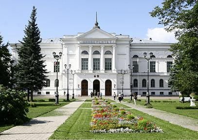
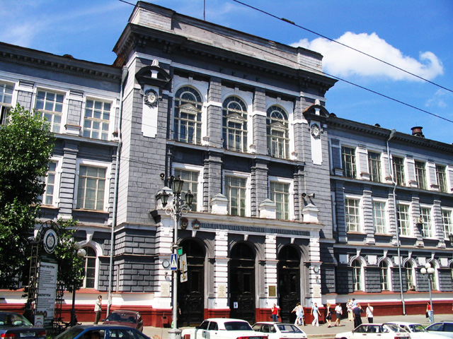
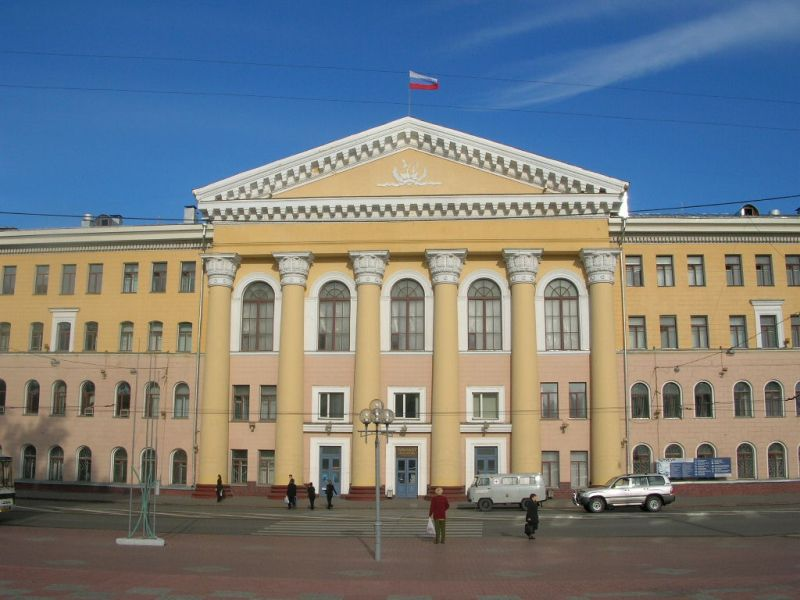

|
Tomsk State University
- Founded in 1878.
- Public university.
- Launched distance learning in 1998.
- Offers distance courses for school leavers, teachers, professionals.
- Does not offer degree programs on-line.
- LMS - MOODLE.
- Virtual learning platform - Electronic University.
|

Tomsk State University
|
|

Tomsk Polytechnic University
|
Tomsk Polytechnic University
- Founded in 1896.
- Public university.
- Launched distance learning in 2000.
- Offers distance bachelors' degree programs, distance courses for professionals and teachers.
- Offers three types of learning at a distance.
- LMS - MOODLE.
|
|
Tomsk State University of Control Systems and Radioelectronics
- Founded in 1961.
- Public university.
- Launched distance learning in 1994.
- Offers distance bachelors' degree programs, courses for teachers, professionals, and short courses.
- LMS - MOODLE.
- Provides a demo version of the user account in a virtual learning environment.
|

Tomsk State University of Control System and Radio Engineering
|